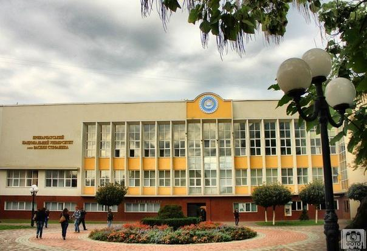
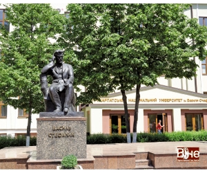
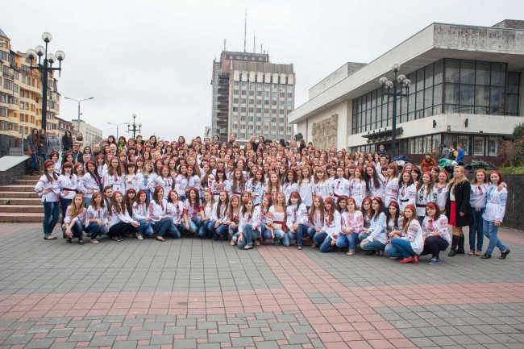
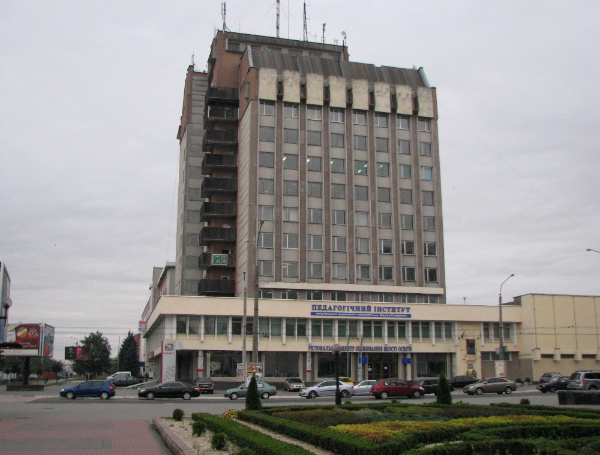
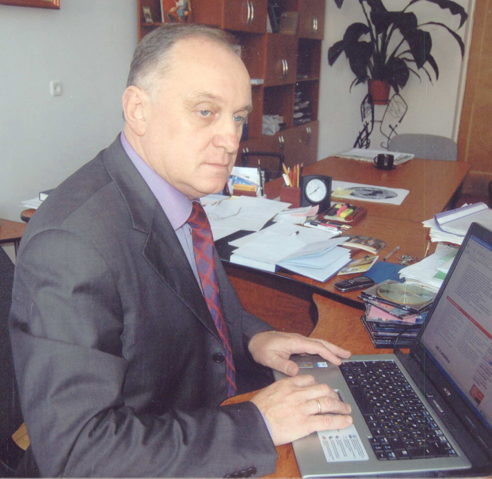

Івано-Франківський коледж Державного вищого навчального закладу «Прикарпатський національний університет імені Василя Стефаника» проводить підготовку фахівців за освітньо-кваліфікаційним рівнем «молодший спеціаліст» (Ліцензія Міністерства освіти і науки України АЕ № 458321 від 07.07.2014). Коледж державної форми власності першого рівня акредитації.
Передісторія

Верховинський коледж туризму і готельного господарства Державного вищого навчального закладу “Прикарпатський національний університет імені Василя Стефаника” створений згідно з наказом МОН України від 20 травня 2004 року та ректора Прикарпатського університету ім. В.Стефаника від 15 червня 2010 року та увійшов до комплексу Інституту туризму і менеджменту Прикарпатського національного університету ім. В.Стефаника. Створення навчального закладу зумовлено тим, що виникла потреба у фахівцях туристичної галузі, яка почала інтенсивно розвиватися на території Гуцульщини.
Рік заснування – 2004.
У 2005 році коледж отримав ліцензію для надання освітніх послуг, пов’язаних з наданням вищої освіти на рівні кваліфікаційних вимог до молодшого спеціаліста з напряму підготовки 0504 Туризм спец. 5.050403 “Організація обслуговування в готелях і туристичних комплексах”
У 2008 році відповідно до рішення ДАК з напряму 0504 Туризм спец. 5.050403 “Організація обслуговування в готелях і туристичних комплексах” коледж визнано акредитованим за І рівнем.
У 2008 році ліцензію замінено, згідно якої підготовка молодших спеціалістів здійснювалась за спеціальностями 5.02010701 “Організація туристичного обслуговування” та 5.14010101 “Організація обслуговування в готелях”
Відповідно до наказу МОН України №11/80 від 23.12.2009 року, з 2010 року набір буде здійснюватись з галузі знань 0307 Туризм за спеціальностями: 503070101 “Туристичне обслуговування”; 503070102 Готельне обслуговування.
Юридичний коледж Державного вищого навчального закладу „Прикарпатський національний університет імені Василя Стефаника” був створений відповідно до наказу Міністра освіти і науки України № 39 від 5 лютого 1998 року з метою підготовки фахівців-юристів освітньо-кваліфікаційного рівня “молодший спеціаліст” для потреб органів державної влади і місцевого самоврядування, суду, правоохоронних органів, підприємств, установ, організацій Івано-Франківської області та Прикарпатського регіону.

20 червня 2002 року згідно з наказом Міністра освіти і науки України № 365 та ректора Прикарпатського національного університету імені Василя Стефаника № 160-а від 3 вересня 2002 року був створений Юридичний інститут Прикарпатського університету імені Василя Стефаника у складі юридичного факультету університету та Юридичного коледжу шляхом їх реорганізації.
В липні 2003 року Прикарпатському університету імені Василя Стефаника надано ліцензію на провадження освітньої діяльності, пов’язаної з наданням вищої освіти на рівні освітньо-кваліфікаційних вимог до „молодшого спеціаліста” з напряму 0601 “Право” спеціальності 5.060101 “Правознавство” з ліцензованим обсягом 100 осіб (Ліцензія – серія АБ № 298897 від 09.03.2006 р.), в тому числі за державним замовленням – 20 осіб.
Коледж відповідно до рішення ДАК від 22 червня 2004 року, протокол № 51 визнано акредитованим за I (першим) рівнем (Сертифікат про акредитацію – серія НД-I № 092639 від 09.03.2006 р.).
У квітні 2009 року коледж пройшов повторну акредитацію і відповідно до рішення ДАК від 4 червня 2009 року його визнано акредитованим за I (першим) рівнем (Сертифікат про акредитацію – серія НД-I № 098031 від 23.09.2009 р.).
Цим же рішенням ДАК коледжу видана Ліцензія (серія АВ № 482872 від 23.09.2009 р.) щодо надання освітніх послуг, пов’язаних з одержанням вищої освіти на рівні кваліфікаційних вимог до молодшого спеціаліста. Ліцензований обсяг складає 40 осіб денної форми навчання та 20 осіб заочної форми.
У лютому 2014 року Юридичний коледж пройшов чергову акредитацію.
З моменту заснування коледжу підготовка молодших спеціалістів здійснювалась на основі повної загальної середньої освіти. Починаючи з 2007 року приймаються абітурієнти на основі базової загальної середньої освіти (Свідоцтво про атестацію – серія ЗД III № 090684 від 04.07.2008 р.).
Відповідно до наказу Міністерства освіти і науки України № 1515 від 28.12.2012 року створений, як структурний підрозділ університету, Івано-Франківський коледж Державного вищого навчального закладу «Прикарпатський національний університет імені Василя Стефаника». З 1 вересня 2013 – 2014 навчального року у коледжі освітньо-кваліфікаційний рівень «молодший спеціаліст» здобували:
5.01010101 «Дошкільна освіта» – 56 осіб;
5.01010201 «Початкова освіта» – 107 осіб;
5.02020701 «Дизайн» – 14 осіб.
У цьому ж навчальному році проводиться організаційна робота щодо ліцензування нової спеціальності 5.04030101 «Прикладна математика»
Історія
Відповідно до наказу Міністерства освіти і науки України № 590 від 14 травня 2014 року «Деякі питання діяльності структурних підрозділів ДВНЗ «Прикарпатського національного університету імені Василя Стефаника» на базі Юридичного коледжу Державного вищого навчального закладу «Прикарпатський національний університет імені Василя Стефаника», Верховинського коледжу туризму і готельного господарства Державного вищого навчального закладу «Прикарпатський національний університет імені Василя Стефаника» та Івано-Франківського коледжу Державного вищого навчального закладу “Прикарпатський національний університет імені Василя Стефаника» створено Івано-Франківський коледж Державного вищого навчального закладу «Прикарпатський національний університет імені Василя Стефаника» 28 серпня 2014 року.


Дирекція коледжу
Директор коледжу кандидат філософських наук, професор Юрій Михайлович Москаленко.

Діяльність
Коледж здійснює підготовку фахівців за освітньо-кваліфікаційним рівнем «молодший спеціаліст» з таких спеціальностей:
У 2017-2018 навчальному році у коледжі навчається 1372 студенти.
Після закінчення навчання за освітньо-кваліфікаційним рівнем “Молодший спеціаліст” студенти мають можливість продовжити навчання за освітньо-кваліфікаційним рівнем “Бакалавр” з відповідного напряму підготовки на старших курсах Педагогічного інституту, Юридичного інституту, Інституту туризму, Інституту мистецтва та факультету математики та інформатики Державного вищого навчального закладу «Прикарпатський національний університет імені Василя Стефаника».
Педагогічний колектив
Станом на 1 вересня 2017 року у коледжі працює 166 педагогічних працівників, з них:
– основні працівники – 58;
– сумісники – 96.
Кількість викладачів, які мають:
– вчене звання професора – 1;
– вчене звання доцента – 35;
– науковий ступінь кандидата наук – 51;
– почесне звання України «Заслужений юрист України» – 1;